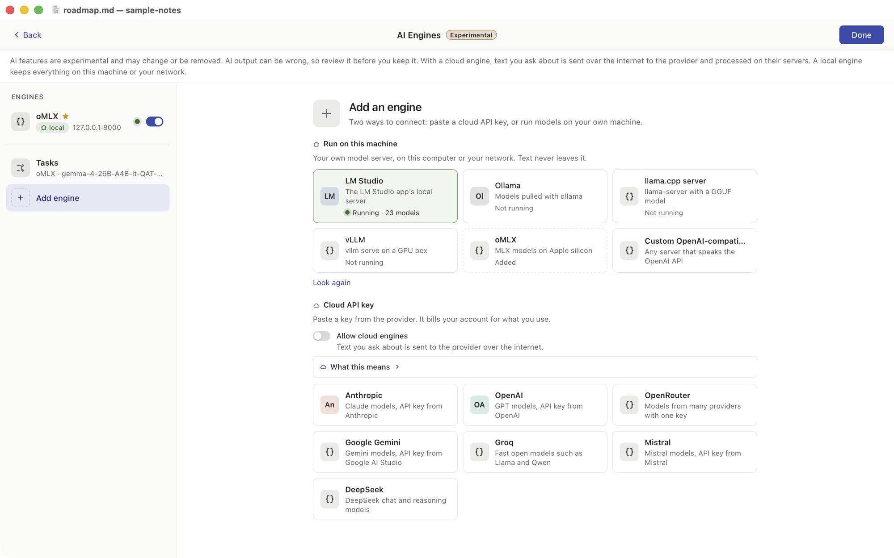
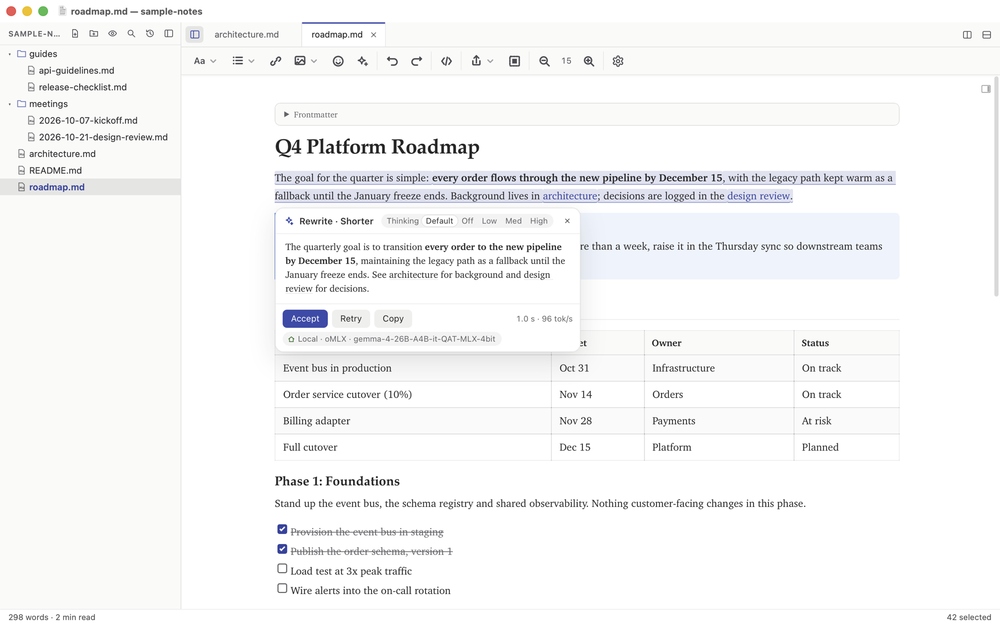

Your own computer can run AI
Most people I talk to assume AI means a subscription: you open a chat window in a browser, you type, and somewhere a data center does the work. That is one way to do it. It is not the only way, and for a writing tool it is often not the best way.
Here is the part that surprises people. The laptop you already own can probably run a capable language model, by itself, with nothing leaving the machine. I have been using one that way in MikeDown for months, and this post is the explanation I keep giving in person.
What changed
Two things happened at once over the last couple of years. Open models got good. A model you can download for free can now rewrite a paragraph, summarize a page or translate a note well enough that you would not reach for the cloud version. And the hardware caught up. An Apple silicon Mac shares one pool of memory between the processor and the graphics cores, so a MacBook with 16 GB or more can load a model that a few years ago needed a dedicated card. On the PC side, a recent NVIDIA card with 8 GB of video memory or more does the same job, and a machine with 32 GB of plain RAM can run a model on the processor alone (slower, but it works).
Those three thresholds are not my opinion. They are the numbers MikeDown's setup wizard checks to decide whether to show local models as an option on your machine.
Why I bother
Three reasons, in the order I care about them.
Private. The text you select never leaves your computer. There is no terms of service to read, no wondering whether your draft becomes somebody's training data, no retention policy to think about. For journals, client work, and anything under an NDA, that settles it.
Offline. On a plane, in a cabin, on a train through a tunnel, it works the same.
No meter. There is no per-use bill. Once the model is downloaded, a thousand rewrites cost the same as one: a little electricity.
The honest trade-offs
The big cloud models are still stronger. If you want long chains of reasoning, deep research or serious code generation, a frontier model from Anthropic or OpenAI will beat anything that fits on a laptop. For the things a writing tool asks for (a shorter version of this paragraph, a title for this note, a translation, a summary) a local model is usually plenty.
Local is also slower on modest hardware. A model running on the processor with no GPU help will make you wait. The same model on an Apple silicon Mac or an NVIDIA card feels quick. And a model that does not fit in memory is not slow, it is painful, which brings up the question everyone asks.
How big a model can I run?
Rough guidance, the same bands the wizard uses. The figures assume a 4-bit quantized model, which is the common download size, and they are hints, not gates: you can try any model you like.
- Under 24 GB
- Models up to about 8B parameters run well.
- 24 to 48 GB
- Models up to about 30B parameters run well.
- Above 48 GB
- Larger models work, well beyond 30B parameters.
Memory here means the memory the model actually runs in: all of it on an Apple silicon Mac, the card's video memory on a PC with an NVIDIA GPU, and system RAM otherwise. A 16 GB MacBook Air lands in the first band. A 36 GB MacBook Pro is in the second, and that is a sweet spot: a 30B class model is a noticeable step up from 8B.
One more tip. Some newer models are a mixture of experts: a large model where only a few billion parameters do the work for each word, so it runs far faster than its size suggests. MikeDown's model picker tags these MoE · fast when they also fit your machine. If you see one, try it first.
Getting started
You need a program that runs the model and listens on a local port. Three good ones:
- LM Studio (Mac, Windows, Linux). A desktop app with a model browser. Download a model, start its local server, done.
- Ollama (Mac, Windows, Linux). Command line. Pull a model and it is already serving.
- oMLX (Mac). Built on Apple's MLX framework, so it is the fast path on Apple silicon.
MikeDown also knows about the llama.cpp server and vLLM, and anything else that speaks the OpenAI API can be added by hand.
Then MikeDown finds it
AI in MikeDown is experimental and off by default. Nothing is sent anywhere, and nothing runs in the background, until you press the AI button in the toolbar and ask to set it up. When you do, MikeDown checks the local addresses those servers use (LM Studio on port 1234, Ollama on 11434, oMLX on 8000, and so on). If one answers and has a model loaded, it is offered first: one click adds the engine, picks the loaded model and turns AI on. If nothing answers, you get one line:
No local AI server found. Start LM Studio, Ollama or oMLX, then choose Look again.
The wizard also reads your hardware and tells you where you stand, in one sentence:
Local is an option on this machine: Apple Silicon, 32 GB. Models up to about 30B parameters run well.
On a smaller machine it says so and suggests cloud as the easier path. In the VS Code extension the graphics card is not checked, so the hint comes from memory alone, and it tells you that too.


If you do want the cloud
You can. MikeDown works with Anthropic, OpenAI and other providers once you turn on cloud engines, and the first request in each folder asks you first and says what it will send. Two things to know. It uses an API key, which the provider bills per use; a ChatGPT Plus or Claude Pro subscription does not include API access, so that is a separate account with the provider. And the key goes in your system keychain (SecretStorage in VS Code), never in a settings file.
In VS Code there is a third option. If you have GitHub Copilot, MikeDown can use the models VS Code already offers through it, with no key to paste. Text then goes to GitHub's Copilot service, and the wizard says so.
Try it
MikeDown Desktop is free for macOS and Windows, with a Linux preview, and the VS Code extension is on the Marketplace. The AI section of the Desktop page has more on what is and is not sent, and the compare page shows which features are in which product. Start a local server, open a note, select a paragraph, and ask for it shorter. The answer comes from your own machine.